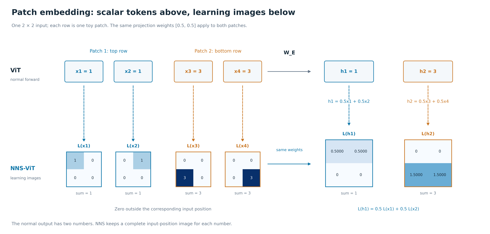
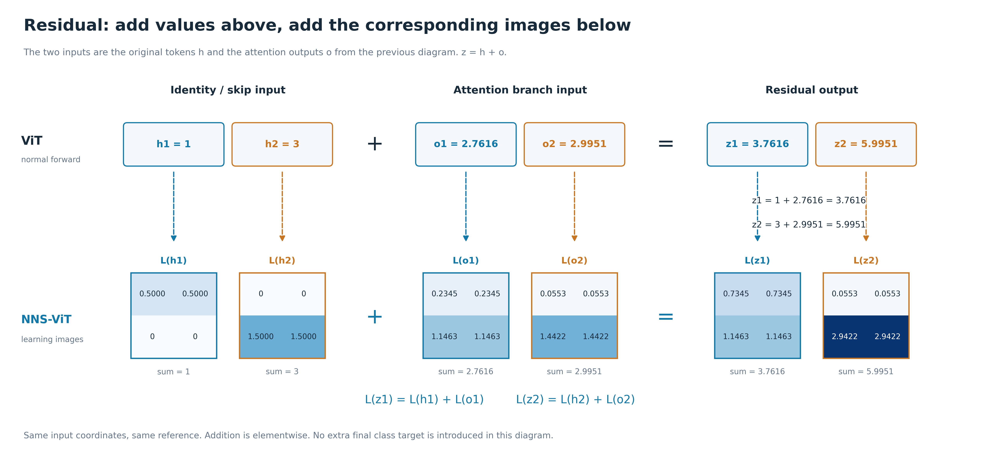

先看这张：正常前向与 learning image 的两排总览
只看上下对应关系。上排是同一个小网络的正常输入和输出；下排每一张 2×2 小图，都对应正上方同名标量。虚线负责上下对应，横向从 patch embedding 走到 attention，再走到 residual。图中不切换样本，也不切换到另一个最终分类目标。

上排：正常 ViT 的输入输出。下排：这些单元的 learning image。
完整说明只看上下对应关系。上排是同一个小网络的正常输入和输出；下排每一张 2×2 小图，都对应正上方同名标量。虚线负责上下对应，横向从 patch embedding 走到 attention，再走到 residual。图中不切换样本，也不切换到另一个最终分类目标。
上排：原输入的第一行 [1,1] 平均得到 h1=1，第二行 [3,3] 平均得到 h2=3。下排：h1 对应的图是 [0.5,0.5;0,0]，h2 对应的图是 [0,0;1.5,1.5]。每张图仍保留整张原图的四个位置；不属于这个 patch 的位置在这里是零。

上排输入 h1=1、h2=3，用 attention 矩阵 A 得到 o1≈2.7616、o2≈2.9951。下排左侧就是上一张图得到的 L(h1)、L(h2)，用图中明确列出的贡献系数 C 逐格加权，得到各输出单元的 L(o1)、L(o2)。o1 的图从只含上半输入扩展到两块输入都有贡献。C 沿路径追踪 Q/K/V，在这个线性 patch 输入例子中可直接组合两张图；一般非线性上游需要保留路径上的位置导数。

这次上排和下排执行同一种“逐项相加”关系。上排 z1=h1+o1、z2=h2+o2；下排 L(z1)=L(h1)+L(o1)、L(z2)=L(h2)+L(o2)，对同一位置的格子相加。图中两个 residual 输出都能从前一张 attention 图接过来。
